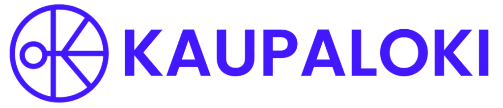
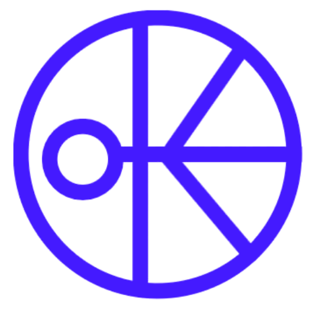
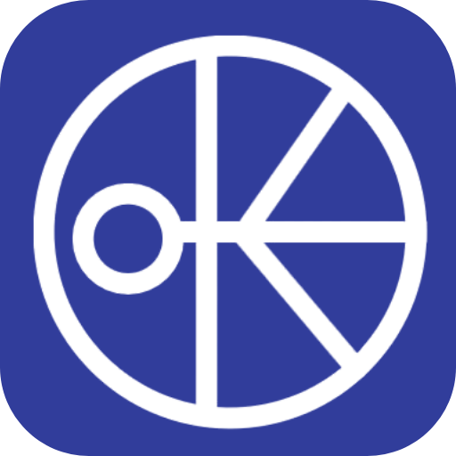

IDENTIDAD DE MARCA · NOVIEMBRE 2026
Una marca, cinco originales.
Logos, colores y tipografía de Kaupaloki. Referencia visual con recursos locales, sin conexión.
Abrir guía Markdown · Paleta JSON · Variables CSS
Logotipo e isotipo
Logotipo sobre fondo claroPNG transparente · 1024 × 222 px
Logotipo sobre fondo oscuroPNG transparente · 1024 × 222 px


Isotipo e icono socialOriginales de 512 × 512 px

Isotipo blancoPNG transparente · 512 × 512 px
Paleta de referencia
#4318FFlogotipo violetaarte_original
#441AFFisotipo violetaarte_original
#313D9Bicono socialarte_original
#FFFFFFblancoarte_original
#F4F7FEbg mainclaro
#F7FAFCbg card secondaryclaro
#E0E5F2border mainclaro
#2B3674text primaryclaro
#707EAEtext secondaryclaro
#A3AED0text mutedclaro
#05CD99successclaro
#FFB547warningclaro
#EE5D50dangerclaro
#38BDF8infoclaro
#0B1437bg mainoscuro
#111C44bg cardoscuro
#1B254Bbg card secondaryoscuro
#7551FFbrand primaryoscuro
#0B2540degradado iniciocomprobantes
#080F1Edegradado fincomprobantes
#101D30tarjetacomprobantes
#284461bordecomprobantes
#0B1426degradado iniciocorreo
#172554degradado mediocorreo
Los originales conservan sus colores: logotipo #4318FF, isotipo #441AFF e icono social #313D9B. Para nueva interfaz, el violeta principal es #4318FF. La guía distingue los valores de claro, oscuro y comprobantes.
Plus Jakarta Sans
TIPOGRAFÍA PRINCIPAL · VARIABLE 200–800
Claridad en cada operación.
ABCDEFGHIJKLMNÑOPQRSTUVWXYZ
abcdefghijklmnñopqrstuvwxyz · áéíóúü · $ % & @
Regular 400Medium 500Semibold 600Bold 700ExtraBold 800
$1,234,567.89 · USDT 1,250.00
Itálica incluida como recurso adicional.